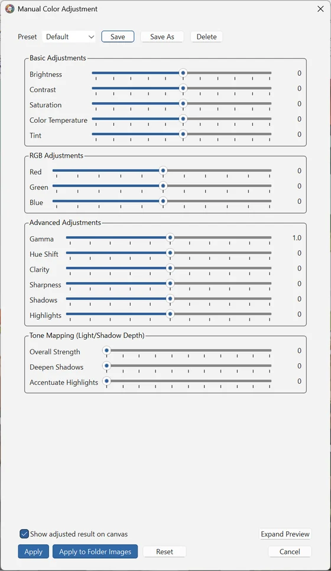
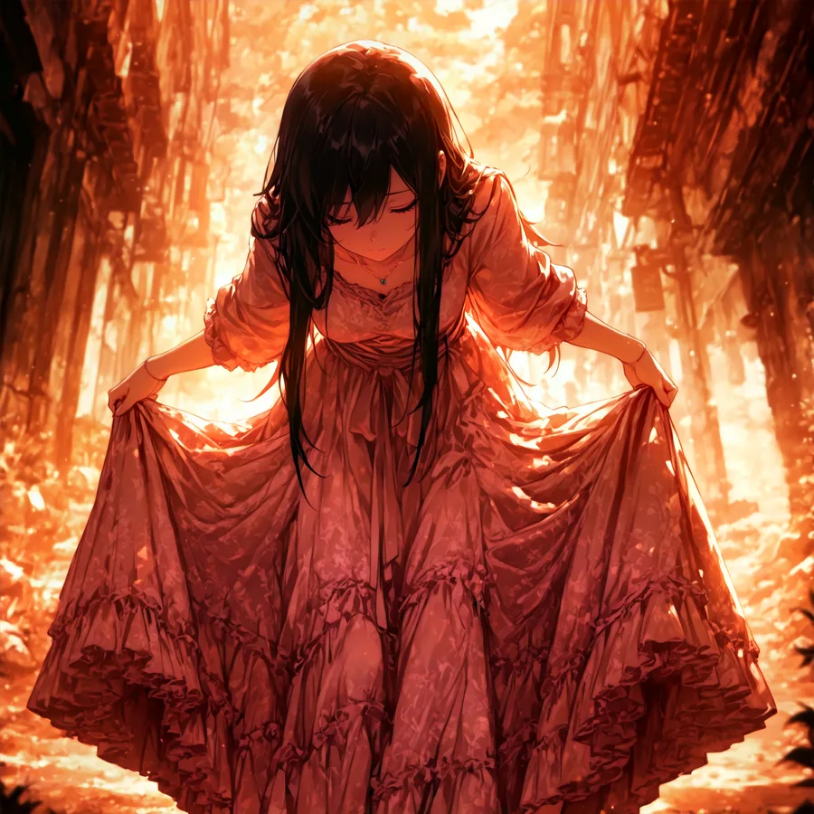
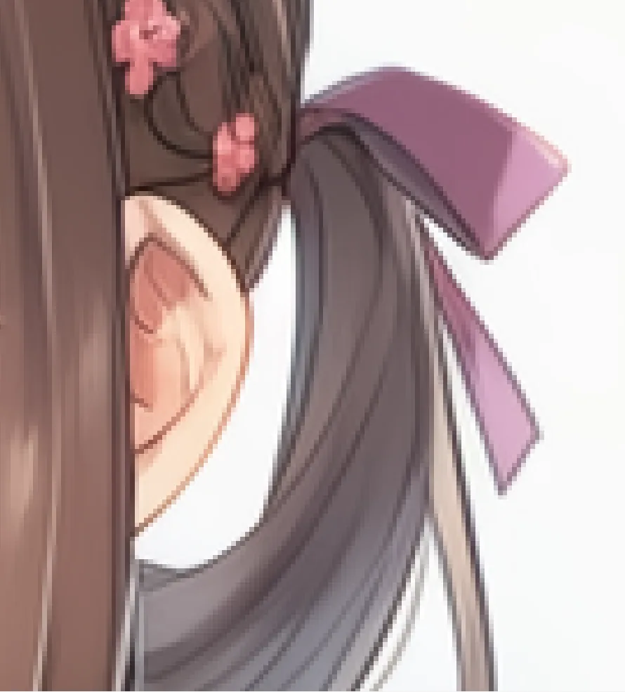
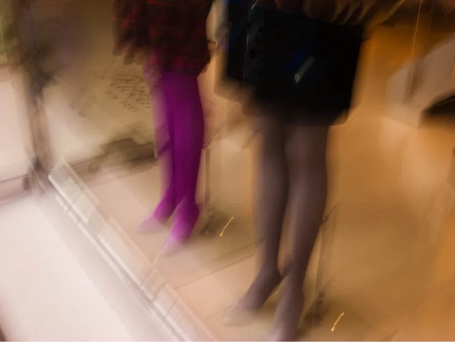
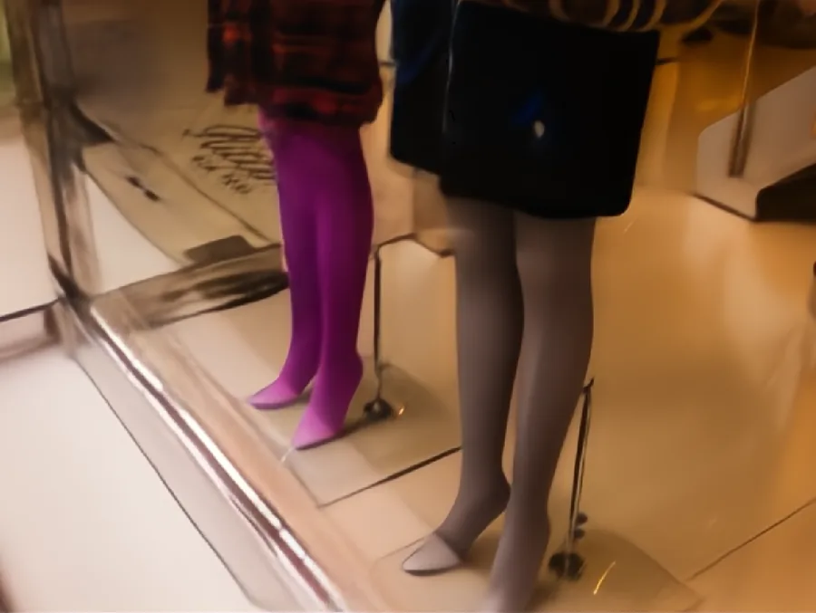
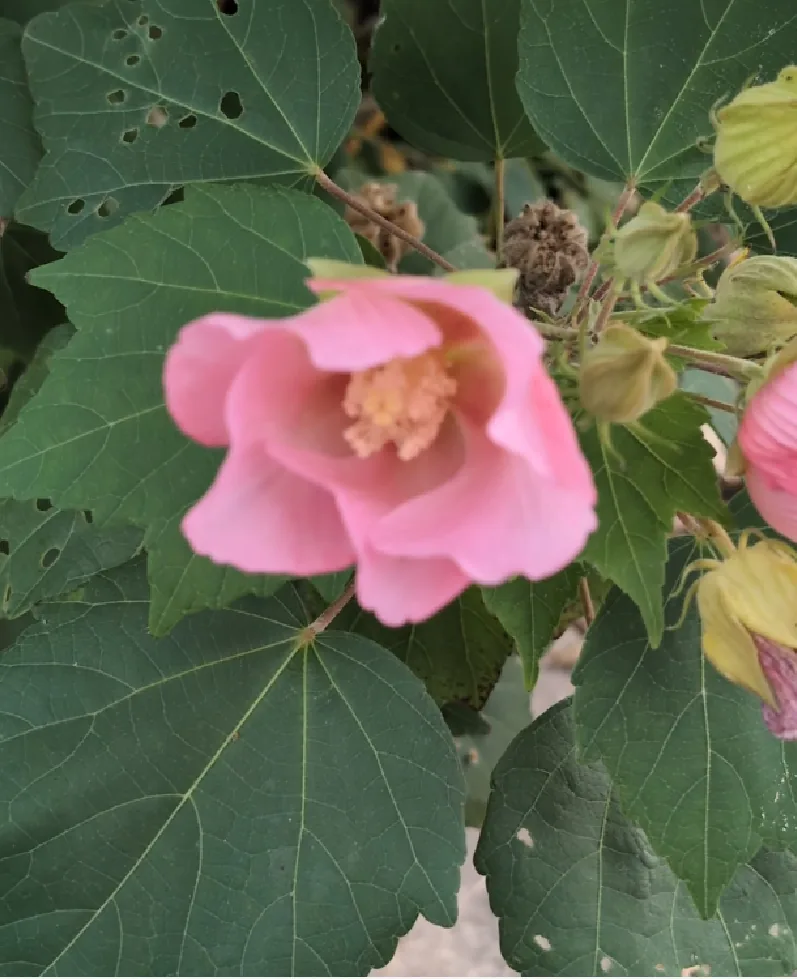
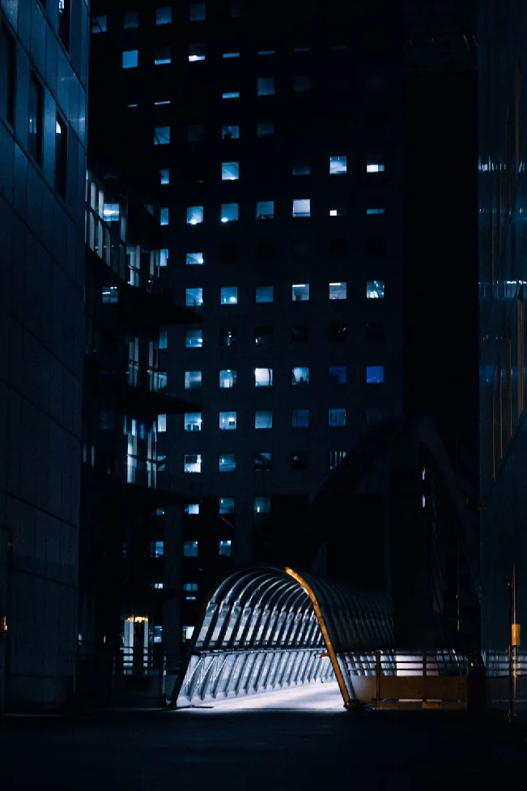

Color & AI correction
Use manual adjustment to tune brightness and color with sliders, or AI correction to fix specific problems with dedicated models. Both support folder batch processing.
Toolbar
123456
| 1Manual color adjustment | Opens the manual color adjustment window. |
| 2Category | Purpose of the AI correction (see below). |
| 3Preset | Model / preset for the category. |
| 4Strength | 100 applies the result as is, 0 keeps the original. Negative values change in the opposite direction (-200 to 200). |
| 5Folder | When on, running processes every image in the same folder (you choose to overwrite or save separate files first). |
| 6Run | Runs the AI correction. |
Manual color adjustment

12345678910| 1Preset | Save, load and delete named settings. |
| 2Basic adjustments | Brightness, contrast, saturation, color temperature, tint |
| 3RGB adjustments | Red, green, blue |
| 4Advanced adjustments | Gamma, hue shift, clarity, sharpness, shadows, highlights |
| 5Tone mapping | Overall strength, deepen shadows, accentuate highlights (light / shadow depth) |
| 6Show adjusted result on canvas | Turn off to compare with the original. |
| 7Expand preview | Shows before / after previews side by side. |
| 8Apply | Applies to the current image. |
| 9Apply to Folder Images | Applies the same settings to every image in the folder. |
| 10Reset | Resets all values. |
AI correction categories
Choose a category, then a preset, and run. Models are downloaded on first use.
| Category | Presets | Use |
|---|---|---|
| Auto Color | Standard / Black Crush / Black Crush+ / High Quality | Naturally balances overall color and brightness. Black Crush deepens shadows for contrast. |
| Brightness | Exposure Corr. / Low-Light 1 / Low-Light 2 | Eases blown highlights and crushed shadows; brightens dark images. |
| Photo Color | Color/Tone Corr.1 / Color/Tone Corr.2 | Adjusts color and tone of photos. |
| Denoise | Light / Medium / Strong / Detail Focus / Texture Focus / Alt Method | Reduces grain and compression noise. Detail Focus and Texture Focus are for real photos. |
| Deblur | General Blur / JPEG Blur / Motion Deblur / Defocus Deblur | Fixes camera shake, motion blur and out-of-focus blur. |
| JPEG Repair | Standard / Heavy Compression | Reduces JPEG block noise and smearing. |
| Moire Repair | Moire Reduction / High-Quality Moire Reduction | Reduces stripe patterns such as those from photographing screens. |
| Color Artifact | Banding Correction / Purple Fringe Fix | Reduces color banding (false contours) in gradients and purple fringing on edges. |
Examples
 Before
Before
After Before
Before After
After Before
BeforeAfter
Before

After Before
Before After
After
Before
After
Before After
After
BeforeAfter
Before
 After
After